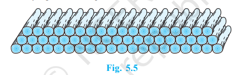
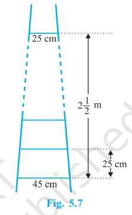
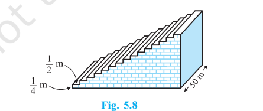

Chapter 5: Arithmetic Progressions
Exercise 5.1
1. In which of the following situations, does the list of numbers involved make an arithmetic progression, and why?
(i) The taxi fare after each km when the fare is ₹15 for the first km and ₹8 for each additional km.
(ii) The amount of air present in a cylinder when a vacuum pump removes 1/4 of the air remaining in the cylinder at a time.
(iii) The cost of digging a well after every metre of digging, when it costs ₹150 for the first metre and rises by ₹50 for each subsequent metre.
(iv) The amount of money in the account every year, when ₹10,000 is deposited at compound interest at 8% per annum.
Answer:
(i) Yes, it forms an AP.
Explanation: ₹15 (first km), ₹23 (2nd km), ₹31 (3rd km), and so on. The difference is ₹8 each time. Common difference = ₹8.
(ii) No, it does not form an AP.
Explanation: 1/4 of air is removed each time, so the air left is not decreasing by a fixed amount. It is decreasing geometrically.
(iii) Yes, it forms an AP.
Explanation: ₹150, ₹200, ₹250... increases by ₹50 every time. Common difference = ₹50.
(iv) No, it does not form an AP.
Explanation: Compound interest leads to exponential increase, not linear. Hence, no fixed common difference.
2. Write first four terms of the AP, when the first term a and the common difference d are given as follows:
(i) a = 10, d = 10
(ii) a = –2, d = 0
(iii) a = 4, d = –3
(iv) a = –1, d = 1/2
(v) a = –1.25, d = –0.25
Answer:
(i) 10, 20, 30, 40
(ii) –2, –2, –2, –2
(iii) 4, 1, –2, –5
(iv) –1, –0.5, 0, 0.5
(v) –1.25, –1.5, –1.75, –2.0
3. For the following APs, write the first term and the common difference:
(i) 3, 1, –1, –3, . . .
(ii) –5, –1, 3, 7, . . .
(iii) 1/3, 5/3, 9/3, 13/3
(iv) 0.6, 1.7, 2.8, 3.9, . . .
Answer:
(i) First term = 3, Common difference = –2
(ii) First term = –5, Common difference = 4
(iii) First term = 1/3, Common difference = 4/3
(iv) First term = 0.6, Common difference = 1.1
4. Which of the following are APs? If they form an AP, find the common difference d and write three more terms.
Answer:
(i) 2, 4, 8, 16,... → Not an AP (difference not constant)
(ii) 2, 5/2, 3, 7/2,... → Yes, AP, d = 1/2, next terms: 4, 9/2, 5
(iii) –1.2, –3.2, –5.2, –7.2,... → Yes, d = –2, next terms: –9.2, –11.2, –13.2
(iv) –10, –6, –2, 2,... → Yes, d = 4, next terms: 6, 10, 14
(v) 3, 3+√2, 3+2√2, 3+3√2,... → Yes, d = √2, next terms: 3+4√2, 3+5√2, 3+6√2
(vi) 0.2, 0.22, 0.222, 0.2222,... → Not an AP
(vii) 0, –4, –8, –12,... → Yes, d = –4, next: –16, –20, –24
(viii) –1/2, –1/2, –1/2,... → Yes, d = 0, next: –1/2, –1/2, –1/2
(ix) 1, 3, 9, 27,... → Not an AP (geometric)
(x) a, 2a, 3a, 4a,... → Yes, d = a, next: 5a, 6a, 7a
(xi) a, a², a³,... → Not an AP
(xii) √2, √8, √18, √32,... → Not an AP
(xiii) √3, √6, √9, √12,... → Not an AP
(xiv) 1², 3², 5², 7²,... → 1, 9, 25, 49 → Not an AP
(xv) 1², 5², 7², 73,... → 1, 25, 49, 73 → Yes, d = 24
Exercise 5.2
1. Fill in the blanks in the following table, given that a is the first term, d the common difference, and an the nth term of the A.P.
| a |
d |
n |
an |
| 7 |
3 |
8 |
? |
| -18 |
? |
10 |
0 |
| ? |
-3 |
18 |
-5 |
| -18.9 |
2.5 |
? |
3.6 |
| 3.5 |
0 |
105 |
? |
Answer:
We use the formula for the nth term of an A.P.: an = a + (n - 1) × d
-
Given: a = 7, d = 3, n = 8
Calculation: an = 7 + (8 - 1) × 3 = 7 + 21 = 28
-
Given: a = -18, n = 10, an = 0
Calculation: 0 = -18 + (10 - 1) × d ⇒ 0 = -18 + 9d ⇒ 9d = 18 ⇒ d = 2
-
Given: d = -3, n = 18, an = -5
Calculation: -5 = a + (18 - 1) × (-3) ⇒ -5 = a - 51 ⇒ a = 46
-
Given: a = -18.9, d = 2.5, an = 3.6
Calculation: 3.6 = -18.9 + (n - 1) × 2.5 ⇒ (n - 1) × 2.5 = 22.5 ⇒ n - 1 = 9 ⇒ n = 10
-
Given: a = 3.5, d = 0, n = 105
Calculation: an = 3.5 + (105 - 1) × 0 = 3.5
2. Choose the correct choice in the following and justify:
- 30th term of the A.P.: 10, 7, 4, ... is
(a) 97 (b) 77 (c) -77 (d) -87
- 11th term of the A.P.: -3, -1/2, 2, ... is
(a) 28 (b) 22 (c) -38 (d) -48
Answer:
-
Given A.P.: 10, 7, 4, ... ⇒ a = 10, d = -3
Calculation: a30 = 10 + (30 - 1) × (-3) = 10 - 87 = -77
Correct option: (c) -77
-
Given A.P.: -3, -1/2, 2, ... ⇒ a = -3, d = 2.5
Calculation: a11 = -3 + (11 - 1) × 2.5 = -3 + 25 = 22
Correct option: (b) 22
3. In the following APs, find the missing terms in the boxes:
(i) 2, __, 26
(ii) __, 13, __, 3
(iii) 5, __, __, 19/2
(iv) –4, __, __, __, __, 6
(v) __, 38, __, __, __, –22
(i) 2, __, 26
We have the first term \( a = 2 \), the third term \( a_3 = 26 \), and the second term \( a_2 \) is missing.
Step 1: Write general term formula:
a_n = a + (n - 1)d
For the 3rd term:
a_3 = a + 2d = 26
Substitute \( a = 2 \):
2 + 2d = 26
2d = 26 - 2 = 24
d = 12
Step 2: Find the missing 2nd term:
a_2 = a + d = 2 + 12 = 14
Answer: The missing term is 14.
(ii) __, 13, __, 3
The 2nd term \( a_2 = 13 \) and the 4th term \( a_4 = 3 \) are given.
We need to find \( a_1 \) and \( a_3 \).
Let the first term be \( a = a_1 \), common difference \( d \).
Use formula:
a_n = a + (n - 1)d
For 2nd term:
a_2 = a + d = 13 \quad (1)
For 4th term:
a_4 = a + 3d = 3 \quad (2)
Subtract (1) from (2):
(a + 3d) - (a + d) = 3 - 13
2d = -10
d = -5
Substitute \( d = -5 \) in (1):
a + (-5) = 13
a = 18
Now find \( a_3 \):
a_3 = a + 2d = 18 + 2 \times (-5) = 18 - 10 = 8
Answer:
First term \( a_1 = 18 \), third term \( a_3 = 8 \).
(iii) 5, __, __, \( \frac{19}{2} \)
Given:
\( a_1 = 5 \), \( a_4 = \frac{19}{2} = 9.5 \)
Find \( a_2 \) and \( a_3 \).
Let the common difference be \( d \).
Use formula for \( a_4 \):
a_4 = a + 3d = 9.5
Substitute \( a = 5 \):
5 + 3d = 9.5
3d = 9.5 - 5 = 4.5
d = \frac{4.5}{3} = 1.5
Find missing terms:
a_2 = a + d = 5 + 1.5 = 6.5
a_3 = a + 2d = 5 + 2 \times 1.5 = 5 + 3 = 8
Answer:
Missing terms are \( a_2 = 6.5 \) and \( a_3 = 8 \).
(iv) –4, __, __, __, __, 6
Given:
\( a_1 = -4 \), \( a_6 = 6 \)
Find \( a_2, a_3, a_4, a_5 \).
Let the common difference be \( d \).
Use formula for \( a_6 \):
a_6 = a + 5d = 6
Substitute \( a = -4 \):
-4 + 5d = 6
5d = 10
d = 2
Find missing terms:
a_2 = a + d = -4 + 2 = -2
a_3 = a + 2d = -4 + 4 = 0
a_4 = a + 3d = -4 + 6 = 2
a_5 = a + 4d = -4 + 8 = 4
Answer:
The missing terms are: -2, 0, 2, 4.
(v) __, 38, __, __, __, –22
Given:
\( a_2 = 38 \), \( a_6 = -22 \)
Find \( a_1, a_3, a_4, a_5 \).
Let the first term be \( a = a_1 \) and common difference \( d \).
Use formula:
a_n = a + (n - 1)d
For 2nd term:
a_2 = a + d = 38 \quad (1)
For 6th term:
a_6 = a + 5d = -22 \quad (2)
Subtract (1) from (2):
(a + 5d) - (a + d) = -22 - 38
4d = -60
d = -15
Substitute \( d = -15 \) in (1):
a + (-15) = 38
a = 53
Find missing terms:
a_1 = a = 53
a_3 = a + 2d = 53 + 2 \times (-15) = 53 - 30 = 23
a_4 = a + 3d = 53 + 3 \times (-15) = 53 - 45 = 8
a_5 = a + 4d = 53 + 4 \times (-15) = 53 - 60 = -7
Answer:
The missing terms are: 53, 23, 8, -7.
4. Which term of the A.P. 3, 8, 13, ... is 78?
Given a = 3, d = 5, an = 78
Using an = a + (n - 1)d ⇒ 78 = 3 + (n - 1) × 5
⇒ 75 = (n - 1) × 5 ⇒ n - 1 = 15 ⇒ n = 16
So, the 16th term is 78.
5. Find the number of terms in the A.P. 7, 13, 19, ..., 205
Given a = 7, d = 6, an = 205
Using an = a + (n - 1)d ⇒ 205 = 7 + (n - 1) × 6
⇒ 198 = (n - 1) × 6 ⇒ n - 1 = 33 ⇒ n = 34
Number of terms = 34
6. Check whether -150 is a term of the A.P. 11, 8, 5, 2, ...
a = 11, d = -3, Let an = -150
Using an = a + (n - 1)d ⇒ -150 = 11 + (n - 1)(-3)
⇒ -161 = -3(n - 1) ⇒ n - 1 = 53.67
Not an integer, so -150 is not a term of the A.P.
7. Find the 31st term of an A.P. whose 11th term is 38 and the 16th term is 73.
Let's denote:
- a = first term of the A.P.
- d = common difference
Given:
a_{11} = a + 10d = 38 (1)
a_{16} = a + 15d = 73 (2)
Step 1: Subtract equation (1) from (2) to eliminate a:
(a + 15d) - (a + 10d) = 73 - 38
15d - 10d = 35
5d = 35
d = \frac{35}{5} = 7
Step 2: Substitute d = 7 in equation (1):
a + 10 \times 7 = 38
a + 70 = 38
a = 38 - 70 = -32
Step 3: Find the 31st term:
a_{31} = a + 30d = -32 + 30 \times 7 = -32 + 210 = 178
Answer: The 31st term of the A.P. is 178.
8. An A.P. consists of 50 terms of which 3rd term is 12 and the last term is 106. Find the 29th term.
Let:
a = first term,
d = common difference,
and number of terms n = 50.
Given:
a_3 = a + 2d = 12 (1)
a_{50} = a + 49d = 106 (2)
Step 1: Subtract (1) from (2):
(a + 49d) - (a + 2d) = 106 - 12
47d = 94
d = \frac{94}{47} = 2
Step 2: Substitute d = 2 in (1):
a + 2 \times 2 = 12
a + 4 = 12
a = 8
Step 3: Find the 29th term:
a_{29} = a + 28d = 8 + 28 \times 2 = 8 + 56 = 64
Answer: The 29th term of the A.P. is 64.
9. If the 3rd and the 9th terms of an A.P. are 4 and –8 respectively, which term of this A.P. is zero?
Given:
a_3 = a + 2d = 4 (1)
a_9 = a + 8d = -8 (2)
Step 1: Subtract (1) from (2):
(a + 8d) - (a + 2d) = -8 - 4
6d = -12
d = \frac{-12}{6} = -2
Step 2: Substitute d = -2 in (1):
a + 2 \times (-2) = 4
a - 4 = 4
a = 8
Step 3: Find n such that a_n = 0:
a_n = a + (n - 1)d = 0
8 + (n - 1)(-2) = 0
8 - 2(n - 1) = 0
-2(n - 1) = -8
n - 1 = 4
n = 5
Answer: The 5th term of the A.P. is zero.
10. Find the sum of the first 22 terms of an A.P. in which \( d = 7 \) and the 22nd term is 149.
Given:
d = 7, a_{22} = a + 21d = 149
Step 1: Find the first term a:
a + 21 \times 7 = 149
a + 147 = 149
a = 149 - 147 = 2
Step 2: Use the sum formula:
S_n = \frac{n}{2} [2a + (n-1)d]
Substitute n=22, a=2, d=7:
S_{22} = \frac{22}{2} [2 \times 2 + (22 - 1) \times 7]
= 11 [4 + 21 \times 7] = 11 [4 + 147] = 11 \times 151 = 1661
Answer: The sum of the first 22 terms is 1661.
11. If the sum of the first \( n \) terms of an A.P. is \( S_n = 4n - n^2 \), what is the first term? What is the sum of the first two terms? What is the second term? Similarly, find the 3rd, the 10th and the nth terms.
Given:
S_n = 4n - n^2
Step 1: Find the first term:
S_1 = 4 \times 1 - 1^2 = 4 - 1 = 3
So, the first term \( a = 3 \).
Step 2: Find the sum of the first two terms:
S_2 = 4 \times 2 - 2^2 = 8 - 4 = 4
Step 3: Find the second term:
a_2 = S_2 - S_1 = 4 - 3 = 1
Step 4: Find the third term:
S_3 = 4 \times 3 - 3^2 = 12 - 9 = 3
a_3 = S_3 - S_2 = 3 - 4 = -1
Step 5: Find the tenth term:
S_{10} = 4 \times 10 - 10^2 = 40 - 100 = -60
S_9 = 4 \times 9 - 9^2 = 36 - 81 = -45
a_{10} = S_{10} - S_9 = -60 - (-45) = -15
Step 6: Find the nth term:
a_n = S_n - S_{n-1} = (4n - n^2) - [4(n-1) - (n-1)^2]
Calculate:
= 4n - n^2 - 4(n-1) + (n-1)^2 = 4n - n^2 - 4n + 4 + n^2 - 2n + 1 = -2n + 5
Answer:
First term \( a = 3 \)
Sum of first two terms = 4
Second term \( a_2 = 1 \)
Third term \( a_3 = -1 \)
Tenth term \( a_{10} = -15 \)
General term \( a_n = -2n + 5 \)
12. Two A.P.s have the same common difference. The first term of one A.P. is 2 and that of the other is 7. Show that the difference between their nth terms is 5 for all values of n.
Let the common difference be \( d \).
First A.P.: first term \( a_1 = 2 \), nth term:
T_n^{(1)} = 2 + (n-1)d
Second A.P.: first term \( a_2 = 7 \), nth term:
T_n^{(2)} = 7 + (n-1)d
Difference between nth terms:
T_n^{(2)} - T_n^{(1)} = [7 + (n-1)d] - [2 + (n-1)d] = 7 - 2 = 5
This difference is constant and equal to 5 for all \( n \).
Answer: The difference between the nth terms of the two A.P.s is always 5.
13. How many three-digit numbers are divisible by 7?
To find how many three-digit numbers are divisible by 7, find the multiples of 7 between 100 and 999.
Step 1: Find the first three-digit multiple of 7.
100 ÷ 7 ≈ 14.28 → next whole number multiple is 15
So, first multiple = 15 × 7 = 105
Step 2: Find the last three-digit multiple of 7.
999 ÷ 7 ≈ 142.71 → largest whole multiple is 142
So, last multiple = 142 × 7 = 994
Step 3: Count the multiples from 105 to 994 with common difference 7.
Number of terms, n = ((Last - First) / Difference) + 1 = ((994 - 105) / 7) + 1 = (889 / 7) + 1 = 127 + 1 = 128
Answer: There are 128 three-digit numbers divisible by 7.
14. How many multiples of 4 lie between 10 and 250?
Step 1: Find the smallest multiple of 4 greater than or equal to 10.
10 ÷ 4 = 2.5 → next whole number multiple is 3
First multiple = 3 × 4 = 12
Step 2: Find the largest multiple of 4 less than or equal to 250.
250 ÷ 4 = 62.5 → largest whole multiple is 62
Last multiple = 62 × 4 = 248
Step 3: Calculate number of multiples between 12 and 248 with difference 4.
Number of terms, n = ((248 - 12) / 4) + 1 = (236 / 4) + 1 = 59 + 1 = 60
Answer: There are 60 multiples of 4 between 10 and 250.
15. For what value of n are the nth terms of two APs 63, 65, 67, ... and 3, 10, 17, ... equal?
Step 1: Find nth term formula for both APs.
First AP: first term a1 = 63, common difference d1 = 2
nth term: Tₙ = 63 + (n - 1) × 2 = 61 + 2n
Second AP: first term a2 = 3, common difference d2 = 7
nth term: Tₙ = 3 + (n - 1) × 7 = 7n - 4
Step 2: Set terms equal and solve for n.
61 + 2n = 7n - 4
61 + 2n + 4 = 7n
65 + 2n = 7n
65 = 5n
n = 13
Answer: The nth terms are equal when n = 13.
16. Determine the AP whose third term is 16 and the 7th term exceeds the 5th term by 12.
Let first term = a, common difference = d.
Step 1: Write term expressions.
Third term, T₃ = a + 2d = 16
Fifth term, T₅ = a + 4d
Seventh term, T₇ = a + 6d
Step 2: Use given relation.
T₇ - T₅ = 12
(a + 6d) - (a + 4d) = 12 → 2d = 12 → d = 6
Step 3: Find a.
a + 2 × 6 = 16 → a + 12 = 16 → a = 4
Answer: AP is 4, 10, 16, 22, ...
17. Find the 20th term from the last term of the AP: 3, 8, 13, ..., 253.
Given AP: a = 3, d = 5, last term l = 253.
Step 1: Find total terms n.
l = a + (n - 1)d → 253 = 3 + (n - 1) × 5
250 = 5(n - 1) → n - 1 = 50 → n = 51
Step 2: The 20th term from the last = (n - 20 + 1)th term = 32nd term.
Step 3: Calculate 32nd term.
T₃₂ = 3 + (32 - 1) × 5 = 3 + 155 = 158
Answer: The 20th term from the last term is 158.
18. The sum of the 4th and 8th terms of an AP is 24 and the sum of the 6th and 10th terms is 44. Find the first three terms of the AP.
Let first term = a, common difference = d.
Step 1: Express given terms.
T₄ = a + 3d
T₈ = a + 7d
T₆ = a + 5d
T₁₀ = a + 9d
Step 2: Write equations from the sums.
T₄ + T₈ = 24 → (a + 3d) + (a + 7d) = 24 → 2a + 10d = 24 → (1)
T₆ + T₁₀ = 44 → (a + 5d) + (a + 9d) = 44 → 2a + 14d = 44 → (2)
Step 3: Subtract equation (1) from (2).
(2a + 14d) - (2a + 10d) = 44 - 24 → 4d = 20 → d = 5
Step 4: Substitute d = 5 in (1).
2a + 10 × 5 = 24 → 2a + 50 = 24 → 2a = 24 - 50 = -26 → a = -13
Step 5: Find first three terms.
T₁ = a = -13
T₂ = a + d = -13 + 5 = -8
T₃ = a + 2d = -13 + 10 = -3
Answer: The first three terms are -13, -8, -3.
19. Subba Rao started work in 1995 at an annual salary of ₹ 5000 and received an increment of ₹ 200 each year. In which year did his income reach ₹ 7000?
Step 1: Identify the first term (initial salary) and common difference (increment).
First term, a = 5000
Increment each year, d = 200
Step 2: Write the nth term formula for salary in the nth year.
Salary in nth year: Tₙ = a + (n - 1) × d = 5000 + (n - 1) × 200
Step 3: Set Tₙ = 7000 and solve for n.
5000 + (n - 1) × 200 = 7000
(n - 1) × 200 = 7000 - 5000 = 2000
n - 1 = 2000 / 200 = 10
n = 11
Step 4: Calculate the year when salary reached ₹7000.
Starting year = 1995
Year when salary reached ₹7000 = 1995 + (11 - 1) = 1995 + 10 = 2005
Answer: Subba Rao's income reached ₹7000 in the year 2005.
20. Ramkali saved ₹ 5 in the first week of a year and then increased her weekly savings by ₹ 1.75. If in the nth week, her weekly savings become ₹ 20.75, find n.
Step 1: Identify first term (initial weekly saving) and common difference.
First term, a = 5
Common difference, d = 1.75
Step 2: Write the nth term formula.
Weekly saving in nth week: Tₙ = a + (n - 1) × d = 5 + (n - 1) × 1.75
Step 3: Set Tₙ = 20.75 and solve for n.
5 + (n - 1) × 1.75 = 20.75
(n - 1) × 1.75 = 20.75 - 5 = 15.75
n - 1 = 15.75 / 1.75 = 9
n = 10
Answer: Ramkali's weekly savings became ₹ 20.75 in the 10th week.
Exercise 5.3
1. Find the sum of the following APs:
(i) 2, 7, 12, …, to 10 terms
a = 2, d = 5, n = 10
Use formula: Sₙ = n/2 × [2a + (n - 1)d]
S₁₀ = 10/2 × [2×2 + (10 - 1)×5] = 5 × [4 + 45] = 5 × 49 = 245
Answer: 245
(ii) –37, –33, –29, …, to 12 terms
a = -37, d = 4, n = 12
S₁₂ = 12/2 × [2×(-37) + (12 - 1)×4] = 6 × [-74 + 44] = 6 × (-30) = -180
Answer: –180
(iii) 0.6, 1.7, 2.8, …, to 100 terms
a = 0.6, d = 1.7 - 0.6 = 1.1, n = 100
S₁₀₀ = 100/2 × [2×0.6 + (100 - 1)×1.1] = 50 × [1.2 + 108.9] = 50 × 110.1 = 5505
Answer: 5505
(iv) 111/15, 12/10, …, to 11 terms
Assuming terms are: 111/15, 12/10, 10, … (Please verify the exact terms)
(Clarification needed for the series terms to calculate sum accurately.)
2. Find the sums given below:
(i) 7 + 10 + 14 + … + 84
a = 7, d = 3
Find n by using last term formula: l = a + (n - 1)d
84 = 7 + (n - 1)×3 ⇒ (n - 1)×3 = 77 ⇒ n - 1 = 25.67 (approx)
Since n must be whole number, check calculation or clarify terms (likely typo in sequence)
(ii) 34 + 32 + 30 + … + 10
a = 34, d = -2, l = 10
Find n:
10 = 34 + (n - 1)(-2)
10 - 34 = -2(n - 1)
-24 = -2(n - 1) ⇒ n - 1 = 12 ⇒ n = 13
Sum:
S₁₃ = 13/2 × [2×34 + (13 - 1)(-2)] = 6.5 × [68 - 24] = 6.5 × 44 = 286
Answer: 286
(iii) –5 + (–8) + (–11) + … + (–230)
a = -5, d = -3, l = -230
Find n:
-230 = -5 + (n - 1)(-3)
-230 + 5 = -3(n - 1)
-225 = -3(n - 1) ⇒ n - 1 = 75 ⇒ n = 76
Sum:
S₇₆ = 76/2 × [-5 + (-230)] = 38 × (-235) = -8930
Answer: -8930
3. In an AP:
(i) Given a = 5, d = 3, aₙ = 50, find n and Sₙ.
Use nth term formula:
50 = 5 + (n - 1)×3 ⇒ 45 = 3(n - 1) ⇒ n - 1 = 15 ⇒ n = 16
Sum:
S₁₆ = 16/2 × [2×5 + (16 - 1)×3] = 8 × [10 + 45] = 8 × 55 = 440
Answer: n = 16, S₁₆ = 440
(ii) Given a = 7, a₁₃ = 35, find d and S₁₃.
a₁₃ = a + 12d = 35 ⇒ 7 + 12d = 35 ⇒ 12d = 28 ⇒ d = 28/12 = 7/3
Sum:
S₁₃ = 13/2 × [2×7 + 12 × 7/3] = 6.5 × [14 + 28] = 6.5 × 42 = 273
Answer: d = 7/3, S₁₃ = 273
(iii) Given a₁₂ = 37, d = 3, find a and S₁₂.
a₁₂ = a + 11d = 37 ⇒ a + 33 = 37 ⇒ a = 4
Sum:
S₁₂ = 12/2 × [2×4 + 11×3] = 6 × [8 + 33] = 6 × 41 = 246
Answer: a = 4, S₁₂ = 246
(iv) Given a₃ = 15, S₁₀ = 125, find d and a₁₀.
a₃ = a + 2d = 15
S₁₀ = 10/2 × [2a + 9d] = 125 ⇒ 5 × [2a + 9d] = 125 ⇒ 2a + 9d = 25
From a₃: a = 15 - 2d
Substitute in sum equation:
2(15 - 2d) + 9d = 25 ⇒ 30 - 4d + 9d = 25 ⇒ 5d = -5 ⇒ d = -1
Find a:
a = 15 - 2×(-1) = 15 + 2 = 17
Find a₁₀:
a₁₀ = a + 9d = 17 + 9×(-1) = 17 - 9 = 8
Answer: d = -1, a₁₀ = 8
4. How many terms of the AP: 9, 17, 25, … must be taken to give a sum of 636?
a = 9, d = 8, Sₙ = 636
Use sum formula:
Sₙ = n/2 × [2a + (n - 1)d] = 636
n/2 × [18 + 8(n - 1)] = 636
n/2 × (18 + 8n - 8) = 636 ⇒ n/2 × (8n + 10) = 636
Multiply both sides by 2:
n(8n + 10) = 1272
8n² + 10n - 1272 = 0
Divide whole equation by 2:
4n² + 5n - 636 = 0
Solve quadratic using formula:
n = [-5 ± √(25 + 4×4×636)] / (2×4)
n = [-5 ± √(25 + 10176)] / 8
n = [-5 ± √10201] / 8
√10201 = 101
n = [-5 ± 101] / 8
Positive root:
n = (96) / 8 = 12
Answer: 12 terms
5. The first term of an AP is 5, the last term is 45 and the sum is 400. Find the number of terms and the common difference.
a = 5, l = 45, Sₙ = 400
Sum formula: Sₙ = n/2 × (a + l)
400 = n/2 × (5 + 45) ⇒ 400 = n/2 × 50 ⇒ 400 = 25n ⇒ n = 16
Find d:
l = a + (n - 1)d ⇒ 45 = 5 + 15d ⇒ 15d = 40 ⇒ d = 40/15 = 8/3
Answer: Number of terms = 16, common difference = 8/3
6. The first and last terms of an AP are 17 and 350 respectively. If the common difference is 9, how many terms are there and what is their sum?
a = 17, l = 350, d = 9
Find n:
l = a + (n - 1)d ⇒ 350 = 17 + (n - 1)×9 ⇒ (n - 1)×9 = 333 ⇒ n - 1 = 37 ⇒ n = 38
Find sum:
S₃₈ = 38/2 × (17 + 350) = 19 × 367 = 6973
Answer: Number of terms = 38, Sum = 6973
7. Find the sum of first 22 terms of an AP in which d = 7 and 22nd term is 149.
Given d = 7, T₂₂ = 149
Use nth term formula:
T₂₂ = a + 21d ⇒ 149 = a + 21 × 7 ⇒ 149 = a + 147 ⇒ a = 2
Sum of first 22 terms:
S₂₂ = 22/2 × [2a + (22 - 1)d] = 11 × [4 + 147] = 11 × 151 = 1661
Answer: 1661
8. Find the sum of first 51 terms of an AP whose second and third terms are 14 and 18 respectively.
T₂ = a + d = 14
T₃ = a + 2d = 18
Subtract:
(a + 2d) - (a + d) = 18 - 14 ⇒ d = 4
Find a:
a + d = 14 ⇒ a + 4 = 14 ⇒ a = 10
Sum of first 51 terms:
S₅₁ = 51/2 × [2a + (51 - 1)d] = 25.5 × [20 + 200] = 25.5 × 220 = 5610
Answer: 5610
9. If the sum of first 7 terms of an AP is 49 and that of 17 terms is 289, find the sum of first n terms.
Step 1: Let the first term = a, common difference = d
Step 2: Sum formula:
Sn = n/2 [2a + (n - 1)d]
Step 3: Use given sums:
S7 = 7/2 [2a + 6d] = 49 → 7[2a + 6d] = 98 → 2a + 6d = 14 …(1)
S17 = 17/2 [2a + 16d] = 289 → 17[2a + 16d] = 578 → 2a + 16d = 34 …(2)
Step 4: Subtract (1) from (2):
(2a + 16d) - (2a + 6d) = 34 - 14 → 10d = 20 → d = 2
Step 5: Put d = 2 in (1):
2a + 6×2 = 14 → 2a + 12 = 14 → 2a = 2 → a = 1
Step 6: Sum of first n terms:
Sn = n/2 [2a + (n - 1)d] = n/2 [2×1 + (n - 1)×2] = n/2 [2 + 2n - 2] = n/2 × 2n = n²
Answer: Sn = n²
10. Show that a₁, a₂, ..., aₙ form an AP where aₙ is defined as below: (i) aₙ = 3 + 4n (ii) aₙ = 9 – 5n. Also find the sum of the first 15 terms in each case.
Part (i): aₙ = 3 + 4n
Step 1: Find aₙ₊₁ - aₙ:
aₙ₊₁ = 3 + 4(n + 1) = 3 + 4n + 4 = 7 + 4n
aₙ₊₁ - aₙ = (7 + 4n) - (3 + 4n) = 4 (constant)
Since the difference is constant, terms form an AP with common difference d = 4.
Step 2: Find first term a₁:
a₁ = 3 + 4×1 = 7
Step 3: Sum of first 15 terms:
S₁₅ = 15/2 [2a₁ + (15 - 1)d] = 15/2 [2×7 + 14×4] = 15/2 [14 + 56] = 15/2 × 70 = 15 × 35 = 525
---
Part (ii): aₙ = 9 – 5n
Step 1: Find aₙ₊₁ - aₙ:
aₙ₊₁ = 9 – 5(n + 1) = 9 – 5n – 5 = 4 – 5n
aₙ₊₁ - aₙ = (4 – 5n) – (9 – 5n) = -5 (constant)
Terms form an AP with common difference d = -5.
Step 2: Find first term a₁:
a₁ = 9 – 5×1 = 4
Step 3: Sum of first 15 terms:
S₁₅ = 15/2 [2a₁ + (15 - 1)d] = 15/2 [2×4 + 14×(-5)] = 15/2 [8 - 70] = 15/2 × (-62) = 15 × (-31) = -465
Answer:
(i) AP with d=4, S₁₅=525
(ii) AP with d=-5, S₁₅=-465
11. If the sum of the first n terms of an AP is Sₙ = 4n – n², what is the first term (S₁)? What is the sum of first two terms? What is the second term? Similarly, find the 3rd, the 10th and the nth terms.
Step 1: First term:
S₁ = 4(1) – 1² = 4 – 1 = 3 → a₁ = 3
Step 2: Sum of first two terms:
S₂ = 4(2) – 2² = 8 – 4 = 4
Step 3: Find second term a₂:
a₂ = S₂ – S₁ = 4 – 3 = 1
Step 4: Find third term a₃:
S₃ = 4(3) – 3² = 12 – 9 = 3
a₃ = S₃ – S₂ = 3 – 4 = -1
Step 5: Find 10th term a₁₀:
S₁₀ = 4×10 – 10² = 40 – 100 = -60
S₉ = 4×9 – 9² = 36 – 81 = -45
a₁₀ = S₁₀ – S₉ = -60 – (-45) = -15
Step 6: Find nth term aₙ:
aₙ = Sₙ – Sₙ₋₁ = [4n – n²] – [4(n - 1) – (n - 1)²]
= 4n – n² – 4n + 4 + (n² – 2n +1)
= (- n² + n²) + (4n – 4n) + (4 – 2n + 1)
= 5 – 2n
Answer:
a₁ = 3, a₂ = 1, a₃ = -1, a₁₀ = -15, aₙ = 5 – 2n
12. Find the sum of the first 40 positive integers divisible by 6.
Step 1: The numbers divisible by 6 are:
6, 12, 18, ..., up to 40 terms.
Step 2: First term a = 6, common difference d = 6, n = 40
Step 3: Sum formula:
Sₙ = n/2 [2a + (n - 1)d] = 40/2 [12 + (39×6)] = 20 [12 + 234] = 20 × 246 = 4920
Answer: 4920
13. Find the sum of the first 15 multiples of 8.
Step 1: Multiples of 8:
8, 16, 24, ..., n = 15
Step 2: a = 8, d = 8, n = 15
Step 3: Sum:
Sₙ = n/2 [2a + (n - 1)d] = 15/2 [16 + (14×8)] = 15/2 [16 + 112] = 15/2 × 128 = 15 × 64 = 960
Answer: 960
14. Find the sum of the odd numbers between 0 and 50.
Step 1: Odd numbers between 0 and 50 are:
1, 3, 5, ..., 49
Step 2: Count terms n:
First odd number = 1 (a = 1), last odd number = 49 (l = 49)
Step 3: Number of terms:
l = a + (n - 1)d → 49 = 1 + (n - 1)×2 → 48 = 2(n - 1) → n - 1 = 24 → n = 25
Step 4: Sum:
Sₙ = n/2 (a + l) = 25/2 (1 + 49) = 25/2 × 50 = 25 × 25 = 625
Answer: 625
15. A contract on a construction job specifies a penalty for delay of completion beyond a certain date as follows: ₹ 200 for the first day, ₹ 250 for the second day, ₹ 300 for the third day, etc., the penalty for each succeeding day being ₹ 50 more than for the preceding day. How much money the contractor has to pay as penalty, if he has delayed the work by 30 days?
Step 1: Penalty forms an AP:
a = 200, d = 50, n = 30
Step 2: Sum of penalties:
Sₙ = n/2 [2a + (n - 1)d] = 30/2 [400 + (29×50)] = 15 [400 + 1450] = 15 × 1850 = 27750
Answer: ₹ 27,750
16. A sum of ₹ 700 is to be used to give seven cash prizes to students of a school for their overall academic performance. If each prize is ₹ 20 less than its preceding prize, find the value of each of the prizes.
Step 1: Let first prize = a, common difference d = -20, number of terms n = 7
Step 2: Total sum = 700
Sₙ = n/2 [2a + (n - 1)d] = 700
Step 3: Substitute values:
7/2 [2a + 6×(-20)] = 700 → 7/2 (2a - 120) = 700
Multiply both sides by 2:
7(2a - 120) = 1400 → 14a - 840 = 1400 → 14a = 2240 → a = 160
Step 4: Prizes are:
a₁ = 160
a₂ = 160 - 20 = 140
a₃ = 120
a₄ = 100
a₅ = 80
a₆ = 60
a₇ = 40
Answer: Prizes are ₹160, ₹140, ₹120, ₹100, ₹80, ₹60, ₹40
17. In a school, students thought of planting trees in and around the school to reduce air pollution. It was decided that the number of trees that each section of each class will plant will be the same as the class in which they are studying, e.g., a section of Class I will plant 1 tree, a section of Class II will plant 2 trees and so on till Class XII. There are three sections of each class. How many trees will be planted by the students?
Step 1: Number of classes = 12 (I to XII), sections per class = 3
Step 2: Trees planted per class:
Class 1: 1 tree × 3 sections = 3
Class 2: 2 × 3 = 6
Class 3: 3 × 3 = 9
...
Class 12: 12 × 3 = 36
Step 3: Total trees planted = 3 × (1 + 2 + 3 + ... + 12)
Step 4: Sum of first 12 natural numbers:
S = n(n+1)/2 = 12×13/2 = 78
Step 5: Total trees = 3 × 78 = 234
Answer: 234 trees
18. A spiral is made up of successive semicircles, with centres alternately at A and B, starting with centre at A, of radii 0.5 cm, 1.0 cm, 1.5 cm, 2.0 cm, ... as shown in Fig. 5.4. What is the total length of such a spiral made up of thirteen consecutive semicircles? (Take π = 22/7)
Solution:
Step 1: Understand the pattern of radii
The radii of the semicircles form an arithmetic progression (AP):
- First radius, r1 = 0.5 cm
- Common difference, d = 0.5 cm
- Number of semicircles, n = 13
Step 2: Calculate the length of each semicircle
The length of a semicircle is half the circumference of a full circle:
Length = π × r
Therefore, the lengths of the semicircles are:
π × 0.5, π × 1.0, π × 1.5, ..., π × 6.5
Step 3: Sum the lengths of the 13 semicircles
The lengths form an AP with:
- First term, a = 0.5π
- Common difference, d = 0.5π
- Number of terms, n = 13
Using the formula for the sum of an AP:
Sn = n/2 × [2a + (n - 1)d]
Substitute the values:
S13 = 13/2 × [2 × 0.5π + (13 - 1) × 0.5π]
S13 = 13/2 × [π + 6π] = 13/2 × 7π
Step 4: Calculate the total length
Using π = 22/7:
S13 = 13/2 × 7 × (22/7) = 13 × 11 = 143 cm
Answer: The total length of the spiral made up of thirteen consecutive semicircles is 143 cm.
19. 200 logs are stacked in the following manner: 20 logs in the bottom row, 19 in the next row, 18 in the row next to it and so on (see Fig. 5.5). In how many rows are the 200 logs placed and how many logs are in the top row?

Solution:
Step 1: Understand the pattern
This is a decreasing Arithmetic Progression (AP) where:
- First term, a = 20 (logs in the bottom row)
- Common difference, d = –1 (each row has 1 log less than the previous)
- Total number of logs, Sn = 200
Step 2: Use the AP sum formula
We know the sum of n terms of an AP is:
Sn = n/2 × [2a + (n – 1)d]
Substitute the known values:
200 = n/2 × [2 × 20 + (n – 1)(–1)]
200 = n/2 × [40 – n + 1]
200 = n/2 × (41 – n)
Multiply both sides by 2:
400 = n(41 – n)
Step 3: Solve the quadratic equation
n(41 – n) = 400
41n – n2 = 400
n2 – 41n + 400 = 0
Use the quadratic formula:
n = [41 ± √(412 – 4 × 1 × 400)] / 2
n = [41 ± √(1681 – 1600)] / 2
n = [41 ± √81] / 2
n = [41 ± 9] / 2
So, n = (41 – 9)/2 = 32/2 = 16 (since n must be positive and less than 41)
Step 4: Find the number of logs in the top row
Use the nth term formula:
an = a + (n – 1)d
a16 = 20 + (16 – 1)(–1) = 20 – 15 = 5
Answer: There are 16 rows and the top row has 5 logs.
20. In a potato race, a bucket is placed at the starting point, which is 5 m from the first potato, and the other potatoes are placed 3 m apart in a straight line. There are ten potatoes in the line (see Fig. 5.6).
A competitor starts from the bucket, picks up the nearest potato, runs back with it, drops it in the bucket, runs back to pick up the next potato, runs to the bucket to drop it in, and she continues in the same way until all the potatoes are in the bucket.
What is the total distance the competitor has to run?
Hint: To pick up the first potato and the second potato, the total distance (in metres) run by a competitor is 2 × 5 + 2 × (5 + 3)
Solution:
Step 1: Understand the running pattern
The competitor runs from the bucket to each potato and back. Each round trip distance increases by 3 meters compared to the previous one.
Step 2: Determine the round trip distances
The distance to the first potato is 5 m. Then every next potato is placed 3 m farther.
- 1st round trip: 2 × 5 = 10 m
- 2nd round trip: 2 × (5 + 3) = 16 m
- 3rd round trip: 2 × (5 + 2×3) = 22 m
- 4th round trip: 2 × (5 + 3×3) = 28 m
- ...
- 10th round trip: 2 × (5 + 9×3) = 2 × 32 = 64 m
Step 3: Generalize the total distance
We can see the round trip distances form an Arithmetic Progression (AP):
10, 16, 22, ..., 64
- First term a = 10
- Common difference d = 6
- Number of terms n = 10
Step 4: Use the AP sum formula
Sn = n/2 × [2a + (n – 1)d]
S10 = 10/2 × [2×10 + (10 – 1)×6] = 5 × [20 + 54] = 5 × 74 = 370
Answer: The competitor has to run a total of 370 meters.
Exercise 5.4 (Optional)
1. Which term of the AP : 121, 117, 113, . . ., is its first negative term?
We have: a = 121, d = 117 - 121 = -4
Let the nth term be the first negative term:
an = a + (n - 1)d < 0
⇒ 121 + (n - 1)(-4) < 0
⇒ 121 - 4n + 4 < 0
⇒ 125 - 4n < 0
⇒ 4n > 125 ⇒ n > 31.25
Therefore, the first negative term occurs at n = 32.
2. The sum of the third and the seventh terms of an AP is 6 and their product is 8. Find the sum of first sixteen terms of the AP.
Let a be the first term and d be the common difference.
a₃ = a + 2d, a₇ = a + 6d
Given:
(a + 2d) + (a + 6d) = 6 ⇒ 2a + 8d = 6 ⇒ a + 4d = 3 ...(1)
(a + 2d)(a + 6d) = 8 ...(2)
From (1): a = 3 - 4d
Substitute into (2):
(3 - 4d + 2d)(3 - 4d + 6d) = 8
(3 - 2d)(3 + 2d) = 8
⇒ 9 - (2d)^2 = 8 ⇒ 4d² = 1 ⇒ d = ±1/2
If d = 1/2, then a = 3 - 2 = 1
Sum of 16 terms, S₁₆ = 16/2 [2a + (16 - 1)d] = 8[2(1) + 15(0.5)] = 8[2 + 7.5] = 8 × 9.5 = 76
3. A ladder has rungs 25 cm apart. The rungs decrease uniformly in length from 45 cm at the bottom to 25 cm at the top. If the top and bottom rungs are 2.5 m apart, what is the length of the wood required for the rungs?

Number of rungs = 250 / 25 + 1 = 11
a = 45 cm, l = 25 cm, n = 11
Sum = n/2 (a + l) = 11/2 (45 + 25) = 11/2 × 70 = 385 cm = 3.85 m
4. The houses of a row are numbered consecutively from 1 to 49. Show that there is a value of x such that the sum of the numbers of the houses preceding the house numbered x is equal to the sum of the numbers of the houses following it. Find this value of x.
Total sum = 49/2 × (1 + 49) = 1225
Let x be the house number, then:
Sum before x = (x - 1)/2 × [2 + (x - 2)] = (x - 1)(x) / 2
Sum after x = 1225 - x - (x - 1)(x)/2
Equating: (x - 1)x/2 = 1225 - x - (x - 1)x/2
⇒ 2(x - 1)x = 2450 - 2x - (x - 1)x ⇒ 2(x - 1)x + (x - 1)x + 2x = 2450
Solve gives x = 35.
5. A small terrace at a football ground comprises of 15 steps each of which is 50 m long and built of solid concrete. Each step has a rise of 1/4 m and a tread of 1/2 m. Calculate the total volume of concrete required to build the terrace.
Each step forms a rectangular prism:
Volume of 1st step = 1/4 × 1/2 × 50 = 6.25 m³
This forms an AP with a = 6.25, d = 6.25
Total volume = Sum of 15 terms = 15/2 × [2a + (15 - 1)d] = 7.5[12.5 + 87.5] = 7.5 × 100 = 750 m³
